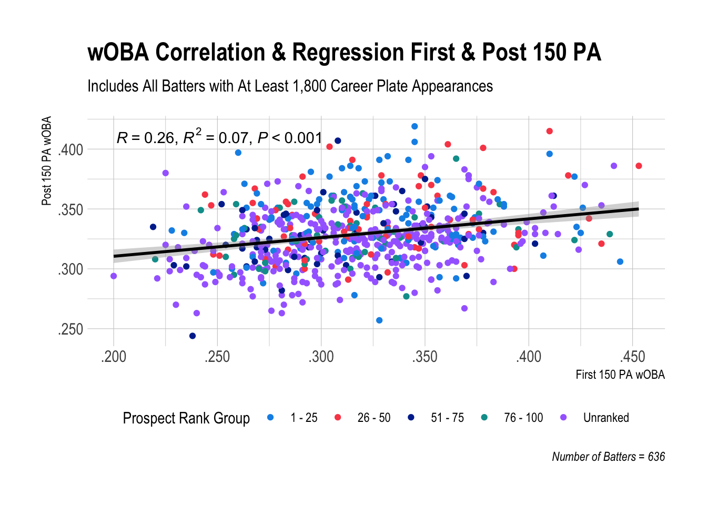
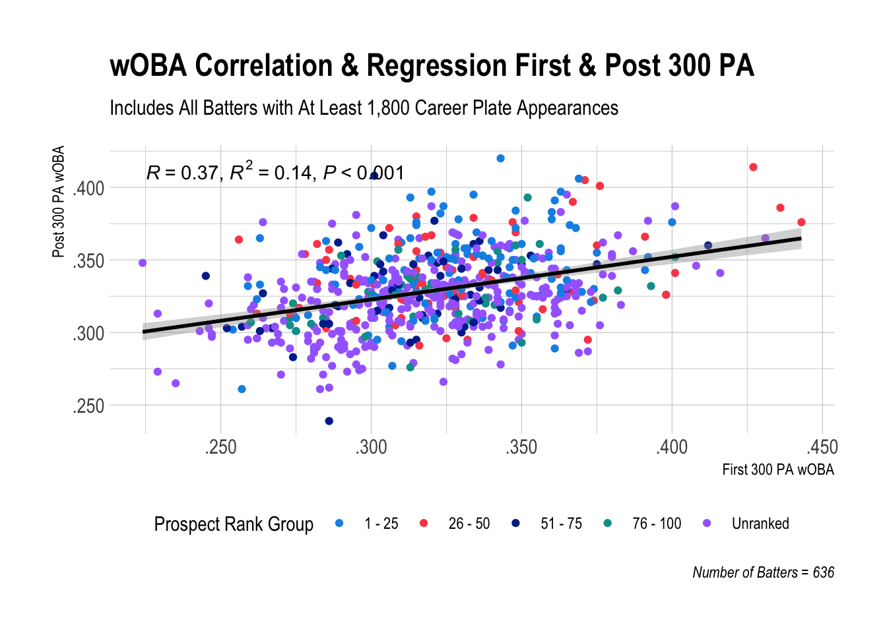
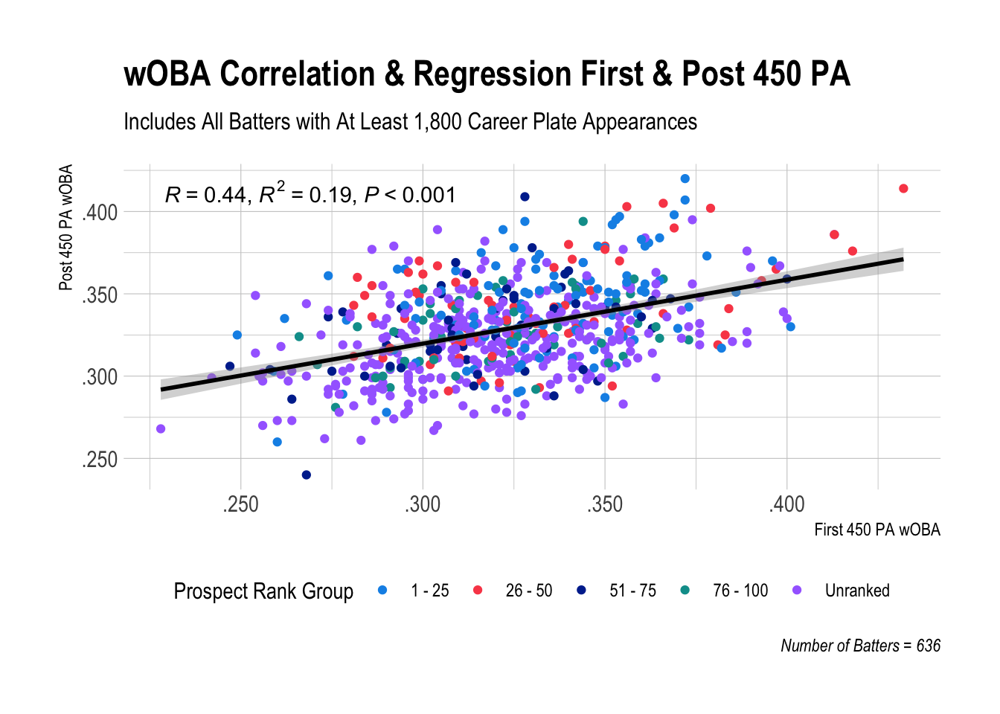
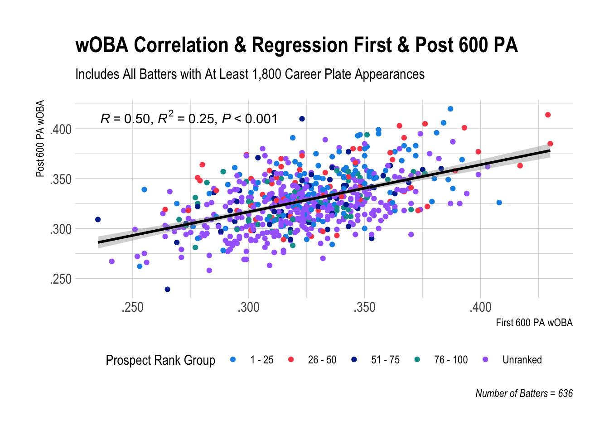
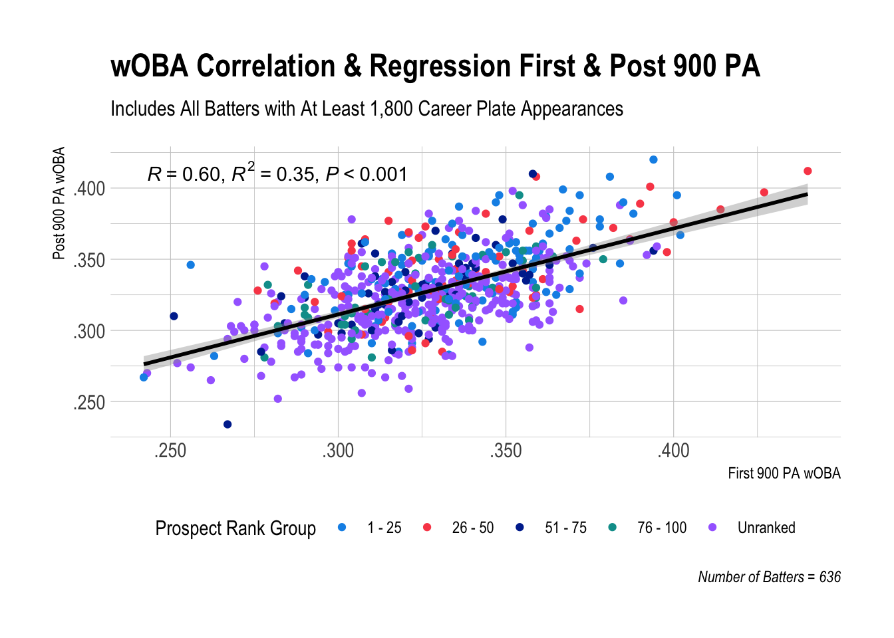
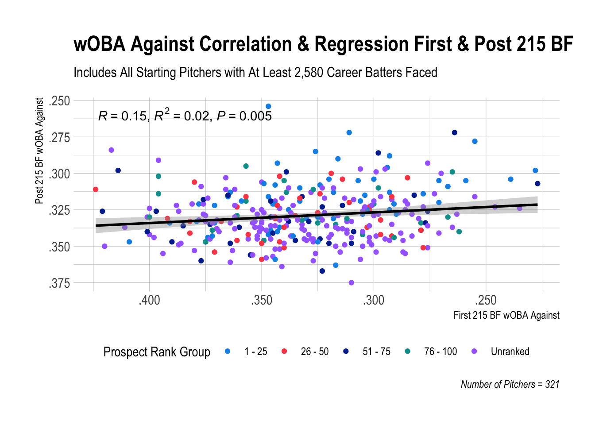
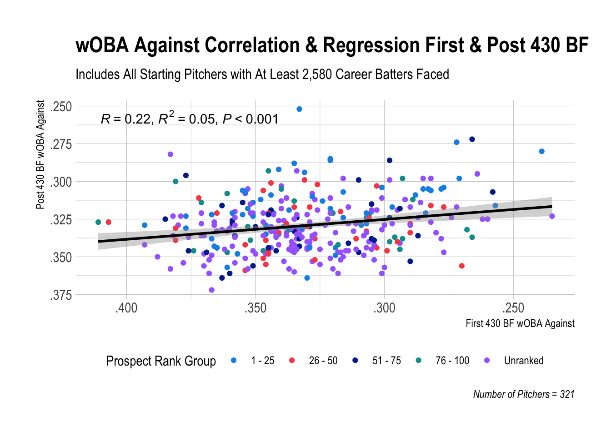
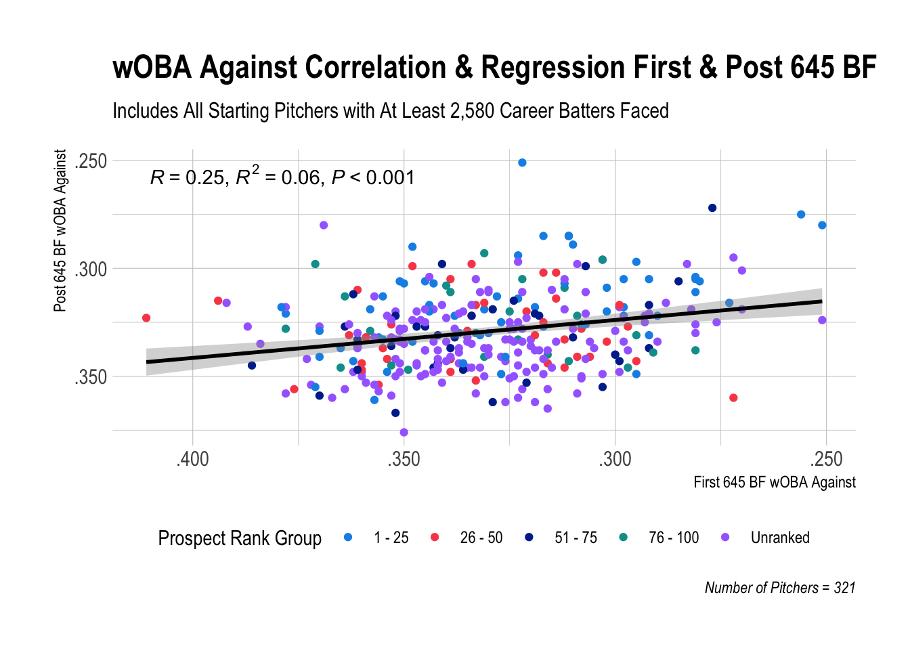
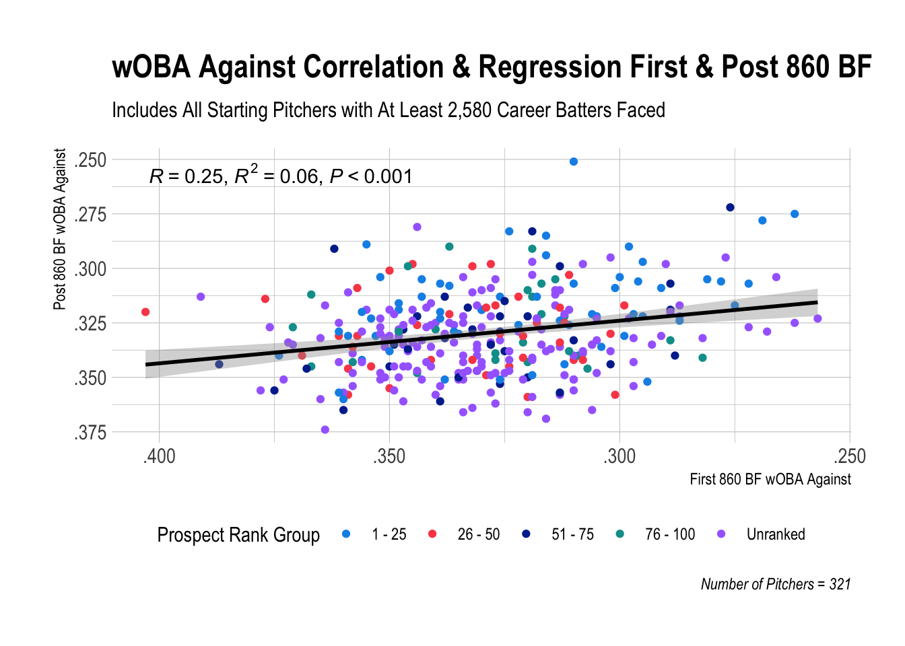
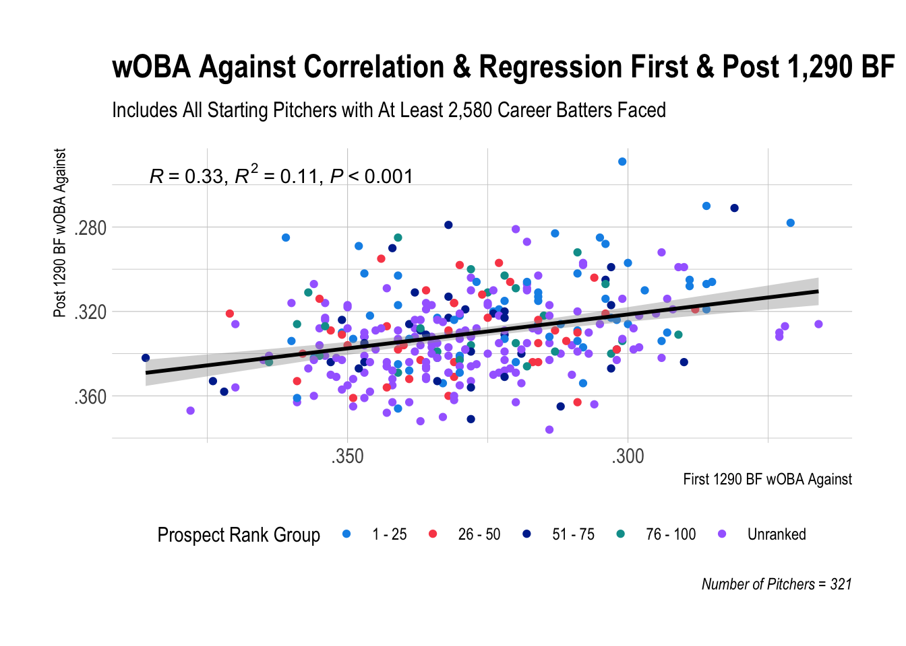

7 Correlation and Regression
7.1 Back Where We Started
All this time and we’ve yet to really answer our central research question! To what extent does a player’s initial performance correlate with/predict their career performance after that point?
To answer this, we will calculate the Pearson correlation coefficient (R) to show how strong the relationship is between initial and remaining career wOBA or wOBA Against (correlation) and the coefficient of determination (R2) to show how well we can “predict” remaining career wOBA from initial wOBA (simple linear regression). I’ve also included p-values (P) to show statistical significance, which are all .005 or less. We are assuming a positive linear relationship between initial and career wOBA.
If all those terms make your eyes glaze over or your head spin, quickly then to the plots!
7.2 Batters




Even if you’re not that familiar with the statistical concepts, the points and the line get the big idea across. For example, the points in the 900 PA plot are on average much closer to the line compared to the 150 PA plot. This means that there is a stronger relationship between batters’ first 900 PA wOBA and their post 900 PA wOBA compared to the relationship between batters’ first 150 PA wOBA and post 150 PA wOBA. That’s straightforward enough.
It’s evident that the more plate appearances, the stronger the relationship becomes as shown by the gradual increase in R: .26 (a weak relationship) to .37 to .44 to .5 to .6 (a moderate relationship, bordering strong).
Related to this, initial wOBA becomes better at predicting a batter’s post wOBA as the number of plate appearances increases. R2 measures this precisely. As an example, when R2 = .07 for the 150 PA plot, this means that initial wOBA is only able to explain 7% of the variation in post wOBA. Other factors are explaining the remaining 93%.
If we tried to add a new batter (point) to the plot but only knew their first 150 PA wOBA, the line would be almost useless in helping us determine where to draw the point (predicting the batter’s post 150 PA wOBA).
The fact that this R2 number is so low hammers home the idea of sample size. We simply do not know much about a batter after 150 plate appearances even if we think we do. R2 steadily rises from .07 to .14 to .19 to .25 to .35 at 900 plate appearances, but even at 900 PA, only 35% of the variation in post wOBA is explained by initial wOBA.
You may be thinking, “Well, how long do we have to wait to become confident in our evaluation of a player based on their initial performance?”
If you are purely basing your evaluation on wOBA, I don’t think waiting much longer than 900 plate appearances will significantly increase your confidence level, meaning that an R value of .6 and R2 value of .35 will not go much higher. Matt Klaassen at FanGraphs has some relevant research on this over a larger number of seasons and players that aligns closely with these numbers.
7.3 Tom Tango’s Predictive wOBA
One blog post I highly recommend reading is from Tom Tango, the creator of wOBA, author of The Book, and lots of other things. I mentioned at the beginning that we’d return to him.
If you read his post, you will see that he compared the wOBA for a player in one season to their wOBA in the next season for the 2020 to 2023 seasons and calculated an R value of .5 and R2 value of .24. Coupled with Klaassen’s research, this helps reinforce that the power of a player’s past/current wOBA to explain future wOBA—for all batters, not just rookies—has limits.
Tango recommends two other statistics, Expected wOBA and, most of all, Predictive wOBA, that he shows do better in explaining a player’s future wOBA than actual wOBA.
“As we know, Actual Outcomes are filled with vagaries of the fielders and the park and the ball and on and on. This is why we prefer Expected wOBA over Actual wOBA. Expected wOBA is focused on those launch characteristics most in control of the batter (launch angle and speed)…”
Essentially, Expected and Predictive wOBA focus on the contact a batter made (how hard they hit the ball and at what angle), which helps eliminate more of the luck or unluckiness batters have when they get hits on bloops or make outs on scorching batted balls.
7.4 Pitchers
How about pitchers?





The short story is that even for the largest sample size here—the first 1,290 batters faced or roughly 300 innings innings pitched in a pitcher’s career—initial wOBA Against is only explaining 11% of the variance in remaining career wOBA Against.
What can we infer from these results?
We could say that pitchers are simply less predictable, but we could also say that wOBA Against is not the best stat to use.
With the advent of Statcast data and models like Stuff+, which—highly simplified—rate pitches and pitchers based on velocity, movement, location, and other physical attributes, we are able to better evaluate pitchers similar to how we are evaluating how hard batters hit the ball and at what angle. Even without Statcast data, we would still have advanced stats like FIP and xFIP, which help isolate pitcher performance from the performance of their defense, which is largely outside of their control.
This piece by Thomas Nestico is a fantastic overview of these concepts and also includes season comparisons between ERA, xFIP, and tjStuff+ with R and R2 values. Alex Chamberlain over at FanGraphs also has a wonderful three-part series on ERA estimators (1, 2, 3). Both are trying to find a method for better predicting future pitching success.
The vast amount of research on pitching and its rapid growth makes me feel unqualified to make any conclusive statements about interpreting these results. I suspect there is a mix of both contributing factors. 1) Pitchers are less predictable than batters. 2) We could find a better stat than wOBA Against to use in a simple linear regression (not to mention a more advanced regression model with multiple predictors).
7.5 Takeaways
Particularly as dynasty fantasy managers, we’re best served using the best stats available to us. Even a slightly better predictor of future career success becomes an edge that compounds more and more over time. We should be mindful, though, that even the best stats to measure a player’s initial performance in the major leagues can only tell us so much about that player’s remaining career.
Based on initial wOBA and wOBA Against, we can be more certain about batters’ future careers compared to pitchers. However, even after a batter has accumulated their first 600 plate appearances—a full season—the strength of the relationship between their initial wOBA and remaining career wOBA is moderate at best.
While probably none of us are disciplined enough to hold a struggling batter for 900 plate appearances, we should be as patient as possible—especially with higher ranked prospects—and acknowledge that making decisions solely on the basis of initial performance, especially very small samples, is not supported by data in any large way.
For pitchers, even more patience is needed or a much better statistic/model.